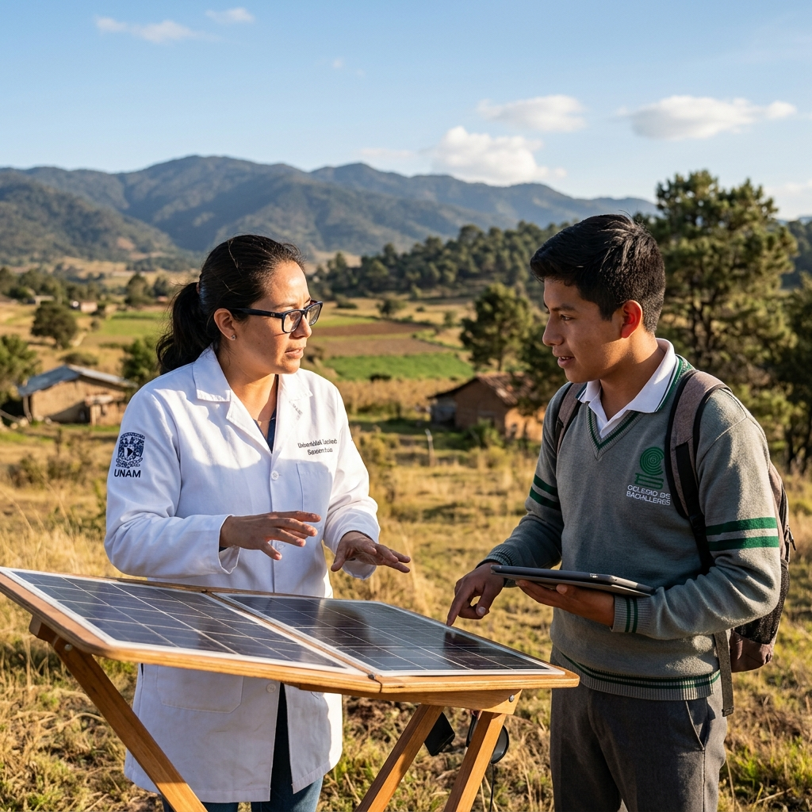
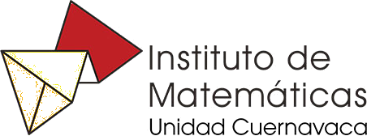
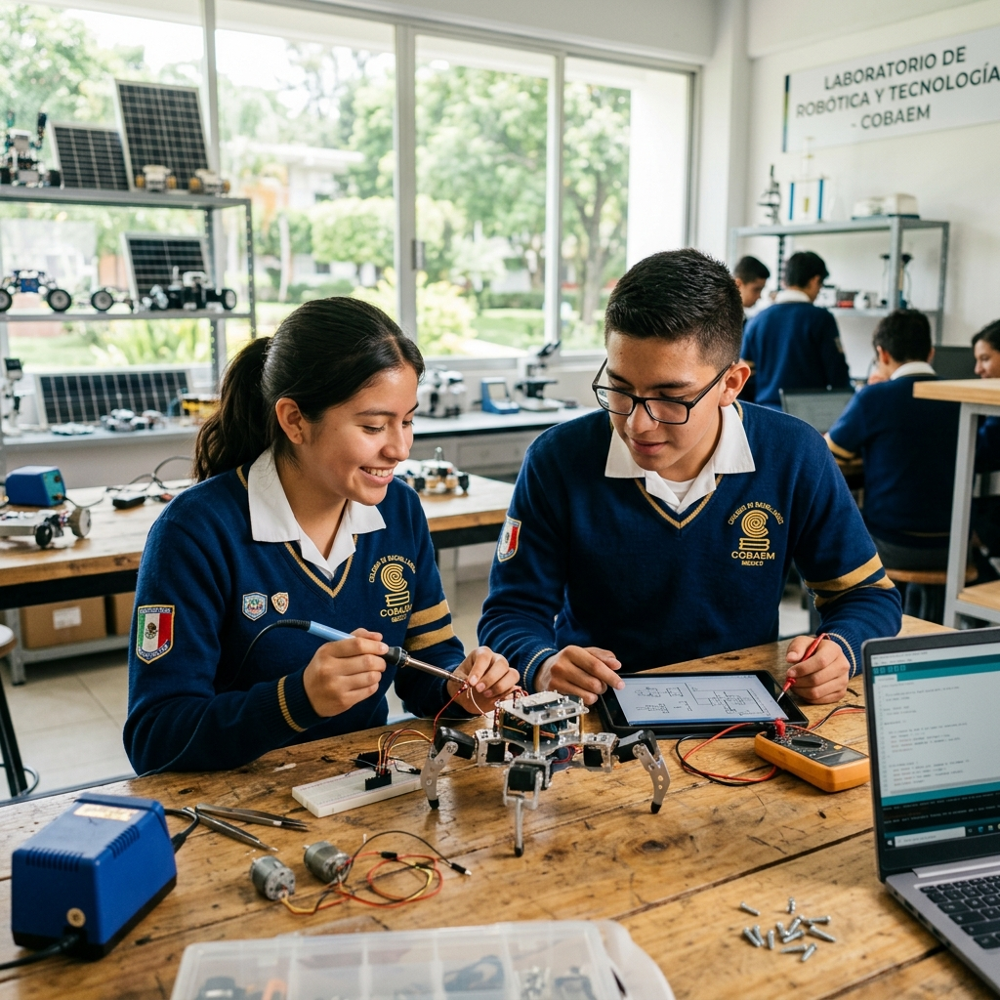

Iniciativa impulsada por

Iniciativa impulsada por
Súmate a la red de mentores del Campus Morelos. Investigadores, académicos y profesionales guiando a la próxima generación de solucionadores.
A continuación, te invitamos a explorar los proyectos propuestos por nuestros estudiantes en el Showcase.
Ciencias Físicas
Biotecnología
Ciencias Genómicas
Energías Renovables
Multidisciplinario

Matemáticas
Universidad Autónoma
Tu experiencia es el catalizador de su éxito
Súmate al esfuerzo adoptando un proyecto como mentorConoce las soluciones tecnológicas propuestas por los estudiantes de Morelos para resolver problemáticas locales con impacto global. Con la tutoría de investigadoras e investigadores de Morelos, estos proyectos serán semilla de soluciones globales.
El municipio de Amacuzac es considerado uno de los más calurosos del estado de Morelos. Aunque el promedio general es de 22° a 26° C, en la temporada ...
Ver PDF completoEl calor dentro del aula 603M, en épocas de primavera y verano, dificulta la atención de clases y la comodidad de la comunidad escolar, por lo que se ...
Ver PDF completoEn la comunidad de Tehuixtla se ha observado, mediante entrevistas realizadas y la identificación de 5 instituciones educativas diferentes (2 primaria...
Ver PDF completoExiste la necesidad de aprovechar de manera sustentable la producción de mango presente en el plantel, ya que actualmente una gran cantidad de frutos ...
Ver PDF completoCon base en las encuestas realizadas en el plantel 04 COBAEM se obtuvieron los siguientes resultados: 1. Los estudiantes, personal administrativo y doc...
Ver PDF completoLos alumnos y el personal del turno vespertino (especialmente las alumnas y el equipo de intendencia/vigilancia) se enfrentan a un entorno escolar que...
Ver PDF completoUno de los problemas que afecta nuestra sociedad y específicamente a nuestra comunidad estudiantil es la falta de actividad física y consideramos que ...
Ver PDF completoEn el Colegio de Bachilleres Plantel 01 Cuernavaca, los usuarios (alumnos, docentes y administrativos) enfrentan el riesgo de desabasto con...
Ver PDF completoLas granjas piscícolas de la comunidad de Chinameca enfrentan cortes constantes de electricidad, lo cual perjudica la producción de peces al no tener ...
Ver PDF completoLas granjas piscícolas de la comunidad de Chinameca enfrentan cortes constantes de electricidad, lo cual perjudica la producción de peces al no tener ...
Ver PDF completoEl problema es: Cómo hacer que crezca una hierba aromática y obtener cosecha durante todo el año o la mayor parte de este para poder obtener beneficio...
Ver PDF completoLas personas tienen poco o nulo conocimiento acerca del daño ambiental que provoca el desecho de aceites y grasas en la cañería, sin embargo algunos d...
Ver PDF completoLos 828 alumnos (aproximadamente) de turno matutino del plantel 02 del Colegio de Bachilleres del Estado de Morelos dependemos de un sistema que utili...
Ver PDF completoLos productores agrícolas y cultivadores de plantas de Jumiltepec carecen de insumos prácticos, económicos y ecológicos que resuelvan de fo...
Ver PDF completoLos trabajadores dedicados a la cosecha de aguacate y otros frutos requieren una herramienta de corte más eficiente, durable y segura que mantenga un ...
Ver PDF completoEl Colegio de Bachilleres del estado de Morelos, plantel 10 Santa rosa 30, del municipio de Tlaltizapán, uno de sus retos a superar es la generación d...
Ver PDF completoIdentificar a las estudiantes que posiblemente estén cursando con la enfermedad. Así como concientizar sobre los factores desencadenantes de la misma ...
Ver PDF completoEn el Colegio de Bachilleres Plantel 01 Cuernavaca y sus alrededores, estudiantes, docentes y habitantes están expuestos diariamente a gases contamina...
Ver PDF completoLos estudiantes, docentes y personal administrativo del plantel no cuentan con una herramienta centralizada que permita consultar de manera rápida, se...
Ver PDF completoHerramientas, metodologías y fragmentos de código abiertos para la comunidad docente y estudiantil.
La propuesta educativa de Airbus Foundation Discovery Space se basa en un enfoque de aprendizaje basado en proyectos (PBL). Nuestra "Caja de Herramientas" metodológica equipa a los facilitadores con secuencias didácticas validadas internacionalmente, adaptadas para funcionar en contextos de conectividad y recursos iniciales limitados en los EMSAD de Morelos.
Soluciones STEAM para nuestra comunidad. Impulsamos el talento de los jóvenes estudiantes del COBAEM para transformar ideas en prototipos tangibles que resuelvan problemas urgentes en sus comunidades, con el apoyo de investigadores del ICF-UNAM y la plataforma Airbus Foundation Discovery Space.
Presentación de propuestas iniciales ante mentores. Ajuste de impacto social y viabilidad.
Programación, diseño 3D y ensamble de prototipos desde los planteles.
Taller "Narrativa de Impacto" por la mañana y STEM Impact Fair por la tarde con presentación ante el comité.

Colaboración entre estudiantes y academia para un futuro sostenible.
Revisión de proyectos, vinculación y presentación de estatus inicial.
Asignación de investigadores asesores e inicio programado del ciclo de conferencias virtuales (4 a 8 conferencias).
Inicio de mejora de propuestas y trabajo colaborativo para el evento de noviembre.
Participación en Ferias Profesiográficas de la UAEM y Semana de la Ciencia y Tecnología.
Presentación final de proyectos, evaluación del comité y Ceremonia de Premiación.
Visita a los museos de la UNAM y otras actividades culturales para los tres primeros lugares.